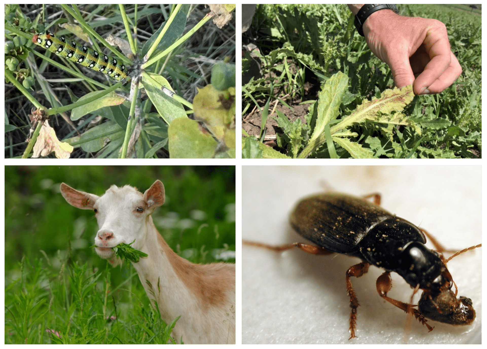
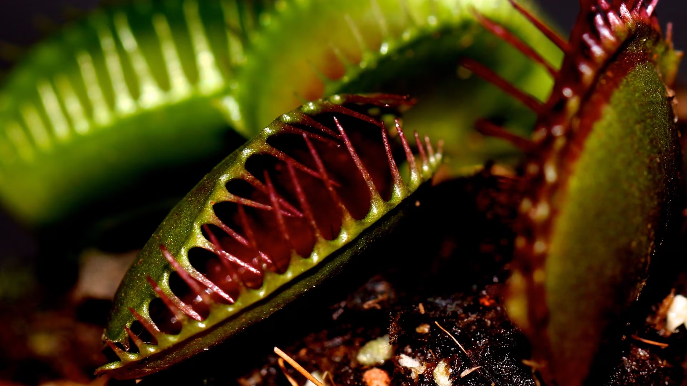
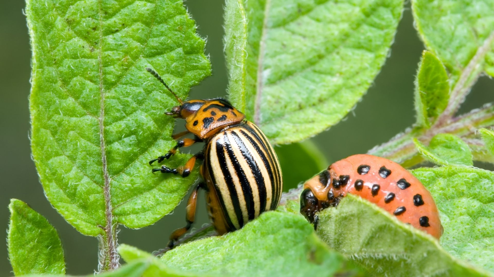
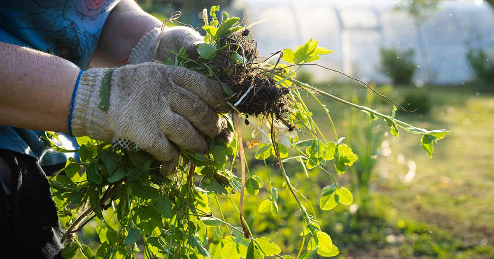

ECOCLEAR SOLUTIONS
Sustainable Pest and Weed Management
Sustainable Pest and Weed Management
This investigation focuses on a website that provides information and tools to help prevent and manage plant predators, pests, and weeds. By protecting native plants and ecosystems, the website supports the concept of kaitiakitanga, which is the Māori principle of guardianship and caring for the environment. Using this resource helps people make responsible decisions that preserve biodiversity and ensure the health of the land for future generations.


Plants face many threats from predators and pests, including insects, animals, fungi, and other organisms that can damage their leaves, stems, roots, flowers, and fruits. To survive and reproduce, plants have developed a range of defense mechanisms. These defenses can be physical, such as thorns, spines, and tough leaves, or chemical, such as producing substances that repel, poison, or discourage attackers. Some plants can even attract beneficial insects that help protect them from pests. Understanding how plants avoid predators and pests helps us learn about their survival strategies and the important role they play in maintaining healthy ecosystems and agricultural systems..

Plants face many threats from predators such as insects, animals, and other organisms that feed on their leaves, stems, roots, or fruits. To survive and grow successfully, plants have developed a variety of defense mechanisms. Some plants produce chemicals that taste bitter or are toxic to predators, while others have physical defenses such as thorns, spines, or thick leaves. Understanding how plants avoid predators helps us appreciate the strategies they use to protect themselves and maintain healthy ecosystems. This topic explores the different ways plants defend against predators and increase their chances of survival.

Plants face many challenges that can affect their growth, health, and survival. These challenges include predators and pests, such as insects, animals, fungi, and other organisms that feed on or damage plant tissues, as well as weeds that compete with plants for sunlight, water, nutrients, and space. To overcome these threats, plants have developed a variety of defense mechanisms, including physical barriers like thorns and tough leaves, and chemical defenses that repel or harm attackers. Farmers and gardeners also use different management practices to protect crops from predators, pests, and weeds. Understanding these threats and the ways plants respond to them is important for maintaining healthy plants and improving agricultural productivity.